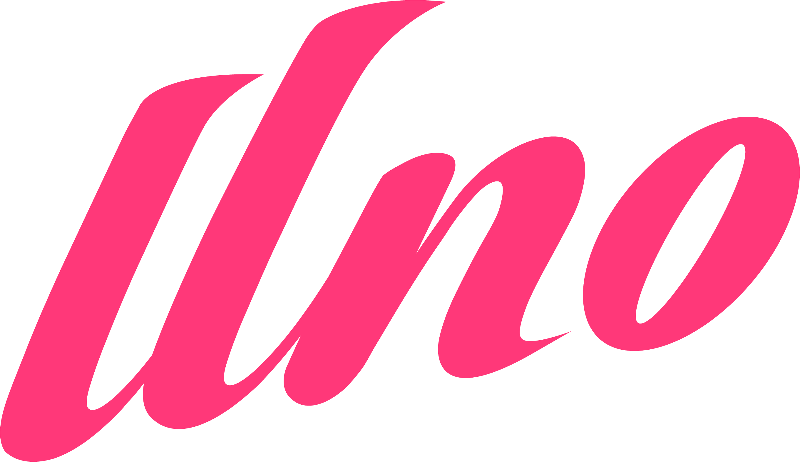

Pit 房组件库 (1px = 10mm)
• 复制/粘贴：
Ctrl+C
/
Ctrl+V
• 删除组件：选中按
Delete 键
• 自由微调：拖动时
按住 Shift 键
🔄 旋转选中的组件 (90°)
⬜ 标准板-竖 (1000x2100)
◽ 小板-竖 (400x2100)
| L型/T型板-竖 (124x2100)
▭ 标准板-横 (2100x1000)
▬ 小板-横 (2100x400)
一 L/T型板-横 (2100x124)
🪖 头盔板 (1000x2100)
📺 电视板 (6000x2100)
💾 导出设计图 (PNG)
🗑️ 清空画布